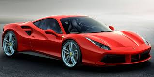
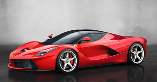
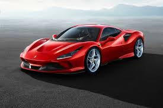
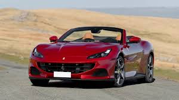
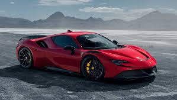
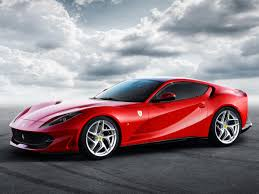
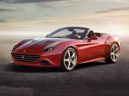

Bienvenidos
Descubre la increíble historia de Ferrari, desde sus inicios hasta la actualidad.

La historia de Ferrari comenzó en 1939, cuando Enzo Ferrari fundó Auto Avio Costruzioni, una empresa dedicada a la fabricación de piezas para autos de carreras. Sin embargo, la marca Ferrari tal como la conocemos hoy no surgió hasta 1947, cuando se presentó el primer automóvil con el nombre Ferrari: el 125 S, con un motor V12 diseñado por Gioachino Colombo. Enzo Ferrari no comenzó como fabricante de autos, sino como piloto. Su carrera en las competiciones de automovilismo comenzó en los años 20, y después de la Segunda Guerra Mundial, se dedicó a la construcción de autos de carrera de alta gama. Su primer equipo de carreras se formó en 1929, conocido como Scuderia Ferrari, y fue parte de Alfa Romeo. Tras la Segunda Guerra Mundial, Enzo Ferrari se dedicó a la fabricación de autos deportivos para el mercado civil, pero su verdadero foco siempre fueron las competiciones. Durante las décadas de 1950 y 1960, Ferrari se destacó en la Fórmula 1, ganando varios campeonatos mundiales. En 1951, Ferrari ganó su primer Gran Premio de Fórmula 1, y en los años siguientes, continuó dominando la categoría. La marca de Ferrari se consolidó como un símbolo de lujo, velocidad y elegancia, no solo por sus autos de carreras, sino también por sus autos deportivos de producción, como el Ferrari 250 GTO de los años 60, uno de los modelos más emblemáticos y caros de la historia.
A lo largo de las décadas, Ferrari ha mantenido su enfoque en la innovación tecnológica y el rendimiento. Ha continuado desarrollando autos deportivos icónicos como el Ferrari F40, Ferrari Enzo y más recientemente, el LaFerrari, manteniéndose en la vanguardia tanto en automovilismo como en la fabricación de vehículos de lujo. Ferrari también ha sido conocida por su participación en la Fórmula 1, donde ha tenido un éxito continuado. A lo largo de los años, ha logrado múltiples campeonatos de constructores y pilotos, destacando nombres como Juan Manuel Fangio, Alberto Ascari, Niki Lauda, Michael Schumacher y Kimi Räikkönen. Hoy en día, Ferrari sigue siendo una de las marcas más reconocidas y deseadas en el mundo, manteniendo su legado en la excelencia de la ingeniería automotriz y en las pistas de carreras.
Los Primeros Años (1940-1950s)
La marca Ferrari nació en un contexto de posguerra, cuando Enzo Ferrari decidió no solo fabricar coches de carreras, sino también autos deportivos para el mercado civil. Tras la Segunda Guerra Mundial, Enzo se concentró en construir autos que no solo fueran rápidos, sino también bellos y exclusivos. El primer modelo de producción en serie, el Ferrari 125 S de 1947, marcó el comienzo de su legado. Durante los primeros años de la marca, Ferrari tuvo un enfoque en la competición, lo que permitió que su reputación creciera rápidamente dentro del mundo de las carreras. En las décadas de 1950 y 1960, los autos Ferrari dominaron las pistas de carreras, especialmente la Fórmula 1, en la cual Ferrari fue pionero, y también se destacó en competiciones como las 24 Horas de Le Mans.
La Época de Dominio en la Fórmula 1 (1950s-1970s) En los años 50 y 60, Ferrari se convirtió en una potencia dominante en la Fórmula 1. Enzo Ferrari invirtió fuertemente en el desarrollo de autos de carreras, y su equipo, Scuderia Ferrari, se convirtió en el equipo más exitoso en la historia de la Fórmula 1 en ese momento. Con pilotos como Alberto Ascari, Ferrari ganó campeonatos mundiales, y la escudería se destacó por su fiabilidad y velocidad. Sin embargo, la relación de Enzo Ferrari con la Fórmula 1 no fue siempre fácil. A lo largo de los años, hubo momentos de tragedias, como la muerte de varios pilotos de Ferrari, lo que generó mucha presión sobre la escudería. A pesar de esto, Ferrari continuó innovando y dominando tanto en la pista como en la producción de autos deportivos.
Ferrari 250 GTO y la Exclusividad (1960s)

Uno de los modelos más emblemáticos de Ferrari es el Ferrari 250 GTO, que se produjo en los años 60. Este coche es considerado uno de los más bellos y exclusivos de la historia de la automoción. Solo se fabricaron 36 unidades, lo que lo convirtió en un objeto de coleccionismo. El 250 GTO no solo era un coche de lujo, sino también un vehículo de alto rendimiento, lo que consolidó a Ferrari como una marca que combinaba estilo y velocidad. Durante esta época, Ferrari también profundizó en el desarrollo de autos de carreras, ganando múltiples títulos en Le Mans y otras competiciones internacionales. La Expansión y el Legado (1980s-2000s) Durante los años 80, Ferrari atravesó algunos momentos difíciles, pero también alcanzó nuevos niveles de éxito. En 1988, Ferrari lanzó el Ferrari F40, un coche que rápidamente se convirtió en un ícono de la marca. El F40 fue el último coche diseñado bajo la supervisión directa de Enzo Ferrari antes de su muerte en 1988. En la década de los 90, Ferrari se consolidó como un referente en el mundo de los autos de lujo y de carreras. El Ferrari F50 (1995) y el Ferrari Enzo (2002) marcaron el avance de la marca en términos de innovación, tecnología y diseño. A lo largo de los años, Ferrari no solo mejoró la calidad de sus autos de serie, sino que también continuó su éxito en la Fórmula 1, con pilotos legendarios como Michael Schumacher.
Ferrari en la Era Moderna (2010s-Presente) La última etapa de Ferrari ha estado marcada por la combinación de tradición y modernidad. El lanzamiento del LaFerrari en 2013 es un ejemplo claro de cómo la marca ha fusionado la tecnología de vanguardia con la exclusividad y el lujo. El LaFerrari es un coche híbrido con un rendimiento impresionante y se convirtió en uno de los coches más deseados del mundo. En la Fórmula 1, Ferrari sigue siendo un competidor importante, aunque no ha logrado el mismo nivel de éxito que en las décadas pasadas. Sin embargo, sigue siendo una de las escuderías más populares y respetadas en el campeonato. En cuanto a su producción de autos, Ferrari ha mantenido su compromiso con la exclusividad. Los coches de Ferrari son conocidos por ser de los más caros del mercado, y la marca sigue cultivando una reputación de lujo y sofisticación. Ferrari Hoy en Día
Hoy en día, Ferrari sigue siendo sinónimo de excelencia en la ingeniería automotriz. La marca sigue fabricando autos deportivos de alta gama como el Ferrari Roma, el Ferrari SF90 Stradale, y el Ferrari 296 GTB. Además, Ferrari ha continuado con su legado en la Fórmula 1, aunque ahora también enfrenta la competencia de otras marcas como Mercedes y Red Bull. En el terreno de la sostenibilidad, Ferrari ha comenzado a introducir modelos híbridos y está explorando la posibilidad de crear autos totalmente eléctricos en el futuro, adaptándose a las nuevas demandas del mercado automotriz, pero sin perder su esencia de velocidad y lujo. Ferrari sigue siendo un ícono de la automoción, y su historia continúa evolucionando, manteniendo viva la leyenda creada por Enzo Ferrari. Ferrari y el Futuro.
En cuanto al futuro de Ferrari, la marca parece estar preparada para enfrentar los retos de la sostenibilidad y las nuevas tecnologías, sin perder su identidad. La firma continúa desarrollando vehículos de alto rendimiento, y con la creciente demanda de autos eléctricos y sostenibles, Ferrari ha anunciado planes para lanzar coches eléctricos en los próximos años, lo que marca un nuevo capítulo en su historia de innovación. A pesar de esto, Ferrari sigue siendo un símbolo de lujo y exclusividad, garantizando que el legado de Enzo Ferrari perdure en el tiempo.
Conclusión Ferrari no es solo una marca de automóviles, sino una leyenda en la historia del automovilismo. Su dedicación a la excelencia, la velocidad y la belleza ha dejado una huella imborrable en la industria automotriz. Con más de 75 años de historia, Ferrari sigue siendo una de las marcas más codiciadas del mundo, tanto en el ámbito de las competiciones de motor como en la fabricación de autos de lujo.
Ferrari es una marca icónica italiana conocida por sus autos de lujo y alto rendimiento. Fundada en 1939 por Enzo Ferrari, la marca se ha convertido en un símbolo de elegancia, velocidad y exclusividad. A lo largo de los años, Ferrari ha producido una serie de modelos emblemáticos que son admirados por su diseño, potencia y tecnología avanzada.
Algunos de los modelos más famosos de Ferrari incluyen:
1.Ferrari 488 GTB:
Este modelo es conocido por su motor V8 biturbo que genera más de 660 caballos de fuerza. El 488 GTB combina un diseño elegante con un rendimiento impresionante, alcanzando velocidades de hasta 330 km/h.

2.Ferrari LaFerrari:
Es uno de los modelos más icónicos de Ferrari, un superdeportivo híbrido que combina un motor V12 con un motor eléctrico para generar más de 950 caballos de fuerza. Su diseño futurista y su tecnología avanzada lo han hecho muy deseado por los coleccionistas.

3.Ferrari F8 Tributo:
Este es el sucesor del 488 GTB y cuenta con un motor V8 que produce más de 710 caballos de fuerza. El F8 Tributo destaca por su aerodinámica y su capacidad de acelerar de 0 a 100 km/h en menos de 3 segundos.

4.Ferrari Portofino:
Este modelo es un convertible de lujo que combina el rendimiento de un deportivo con la comodidad de un auto de gran turismo. Cuenta con un motor V8 que produce 600 caballos de fuerza y es perfecto tanto para viajes largos como para conducir en ciudad.

5.Ferrari SF90 Stradale:
Es el primer híbrido enchufable de Ferrari. Equipado con un motor V8 combinado con tres motores eléctricos, el SF90 Stradale genera una potencia total de más de 1,000 caballos de fuerza, lo que lo convierte en uno de los autos más potentes de la marca.

6.Ferrari 812 Superfast:
Con un motor V12 de 6.5 litros, este modelo es uno de los más rápidos y potentes de Ferrari. Su diseño elegante y su rendimiento sobresaliente hacen de él un verdadero lujo sobre ruedas.

7.Ferrari California T:
Un modelo más accesible en la gama de Ferrari, con un motor V8 turboalimentado. El California T combina la estética clásica de Ferrari con la tecnología moderna.
